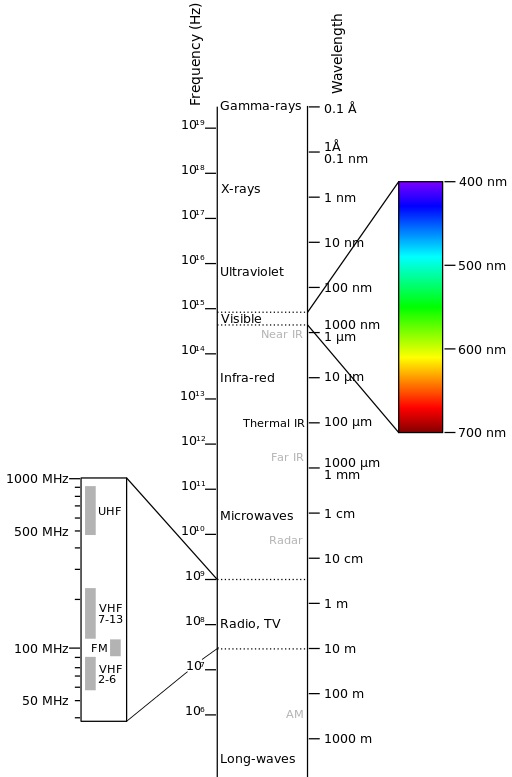
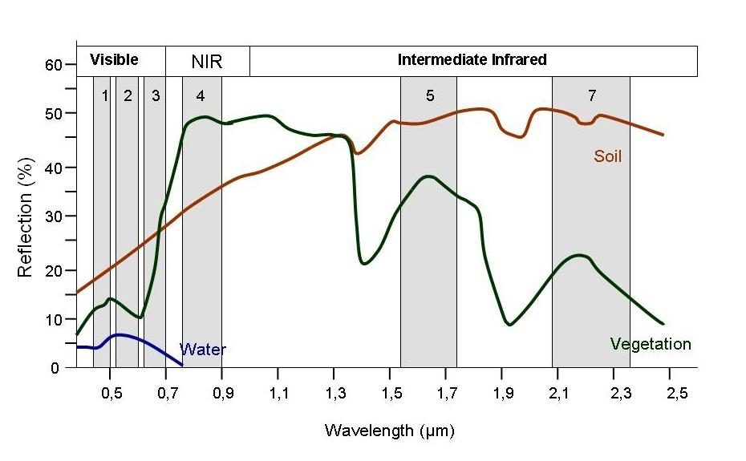
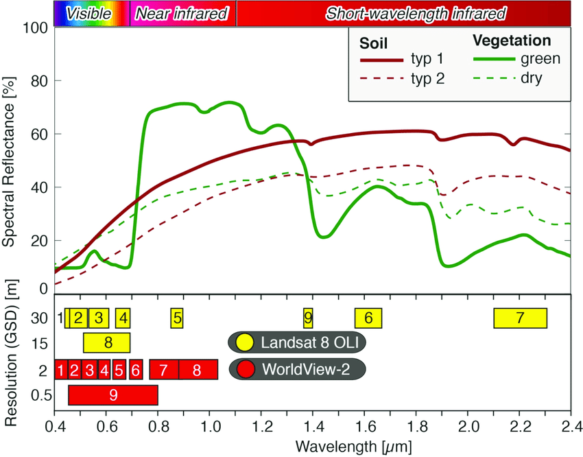

6. Multispectral Imagery#
This lab introduces how to visualize and process multispectral and multiband imagery using Landsat satellite data.
Introduction to Landsat Imagery#
The Landsat program is a joint NASA and USGS program and the longest running satellite imagery enterprise in the U.S. and the world. The program has so far launched 9 satellites since 1972 with Landsat 1 through 2021 with Landsat 9. The spatial resolution varies from 15 to 100 m, and the temporal resolution (meaning the time it takes for the same location to be photographed) is approximately 16 days. Landsat imagery is divided into scenes each measuring approximately 185 x 185 km.
The main instrument consists of a multispectral scanner that records data in separate bands. The specific wavelength ranges differ across missions, but the multispectral scanners typically record information across the visible (blue, green, red), near infrared (NIR), short wave infrared (SWIR), and thermal infrared (TIR) spectrum.
{kind=link}
Photo credit: Victor Blacus
{kind=link}
The most recent Landsat missions (7, 8, and 9) have the highest quality data. The bands and their corresponding wavelengths are shown below.
Landsat-7 ETM+ Bands (µm) |
Landsat-8 OLI and TIRS Bands (µm) |
Landsat 9 OLI and TIRS-2 Bands (µm) |
||||
|---|---|---|---|---|---|---|
30 m Coastal/Aerosol |
0.435-0.451 |
Band 1 |
0.433-0.453 |
|||
Band 1 |
30 m Blue |
0.441-0.514 |
30 m Blue |
0.452-0.512 |
Band 2 |
0.450-0.515 |
Band 2 |
30 m Green |
0.519-0.601 |
30 m Green |
0.533-0.590 |
Band 3 |
0.525-0.600 |
Band 3 |
30 m Red |
0.631-0.692 |
30 m Red |
0.636-0.673 |
Band 4 |
0.630-0.680 |
Band 4 |
30 m NIR |
0.772-0.898 |
30 m NIR |
0.851-0.879 |
Band 5 |
0.845-0.885 |
Band 5 |
30 m SWIR-1 |
1.547-1.749 |
30 m SWIR-1 |
1.566-1.651 |
Band 6 |
1.560-1.660 |
Band 6 |
60 m TIR |
10.31-12.36 |
100 m TIR-1 |
10.60-11.19 |
Band 10 |
10.30-11.30 |
100 m TIR-2 |
11.50-12.51 |
Band 11 |
11.50-12.50 |
|||
Band 7 |
30 m SWIR-2 |
2.064-2.345 |
30 m SWIR-2 |
2.107-2.294 |
Band 7 |
2.100-2.300 |
Band 8 |
15 m Pan |
0.515-0.896 |
15 m Pan |
0.503-0.676 |
Band 8 |
0.500-0.680 |
30 m Cirrus |
1.363-1.384 |
Band 9 |
1.360-1.390 |
Earlier missions (Landsat 1-5) might be useful for historic purposes, and their bands and corresponding wavelengths are available here. The Landsat 6 mission failed to reach orbit.
Download Imagery#
Imagery can be downloaded from USGS Earth Explorer. Under Search Criteria, identify an area of interest and filter by Cloud Cover (under 10%). Under Data Sets, select Landsat Collection 2 Level-1 and Landsat 8-9 OLI/TIRS C2 L1, then click on Results. For this exercise, we will work with Landsat imagery around 16° 20’ 23’’ N and 90° 38’ 27’’ W. The Landsat 8 imagery acquired on 2017/4/3 is of a high quality with low cloud cover. Click on Product Options and download the Product Bundle. Extract all of the files to your desired folder.
This folder should contain several Geotiff files and metadata. Each band is stored as a separate Geotiff file. To view band combinations, we will have to load these bands together as a single composite, multiband image.
In ArcGIS Pro, we just have to add the combined .txt file or Raster Product (usually ______MTL.txt). We can then alter the visualization and band combination under Symbology.
In QGIS, we have to build a virtual raster. Go to Raster -> Miscellaneous -> Build Virtual Raster. Under Input layers, we will add only the 30 meter bands listed in the chart above: Bands 1, 2, 3, 4, 5, 6, 7, and 9, in order. Set Resolution to Highest and Place each input file into a separate band. The visualization and band combination can be edited under the Properties of the Virtual raster. Bilinear Resampling and an updated canvas (DRA in ArcGIS Pro) can improve visualization.
Band Compositing#
Multiband imagery can be visualized with different band combinations using the red, green, and blue additive color model. In this system, 3 bands can be viewed at one time, each displayed as red, green, or blue. A fourth channel, alpha, can be optionally blended on top of the 3 traditional bands.
Band composites can be referenced with the 3 numbers each representing the relevant band, in order of red, green, or blue. The band combination 4-3-2, therefore, indicates that Band 4, Band 3, and Band 2 will be displayed as red, green, and blue, respectively. In Landsat 8 and 9, Band 4 is red, Band 3 is green, and Band 2 is blue, meaning that when displayed as 4-3-2, we are viewing the visible spectrum or true color of the image.
Different materials, for example, vegetation, water, soil, rock, etc., reflect the electromagnetic spectrum differently. Spectral reflectance is the ratio of the amount of light reflected by a surface to the amount of light that hits it at different wavelengths. A spectral reflectance curve shows the variations in spectral reflectance across different wavelengths and materials.
The following spectral reflectance curves show reflectance values for different materials at different wavelengths and Landsat bands (Landsat 7 above and Landsat 8 and 9 below):
{kind=link}
Photo credit: SEOS eLearning
{kind=link}
Photo credit: Wulf et al. 2015
Here are some useful band combinations in Landsat 8 and 9:
Natural Color |
4-3-2 |
Shortwave Infrared (Urban) |
7-6-4 |
Color Infrared (Vegetation) |
5-4-3 |
Agriculture |
6-5-2 |
Atmospheric Penetration |
7-6-5 |
Healthy Vegetation |
5-6-2 |
Land/Water |
5-6-4 |
Natural with Atmospheric Removal |
7-5-3 |
Shortwave Infrared |
7-5-4 |
Vegetation Analysis |
6-5-4 |
Geology |
7-6-2 |
Bathymetric |
4-3-1 |
Forest Fires |
7-5-2 |
Bare Earth |
6-3-2 |
Vegetation/Water |
5-7-1 |
Archaeology (Parcak/Egypt) |
5-4-3 |
Archaeology (Saturno/Guatemala) |
5-3-2 |
See also: ESRI, NV5, GIS Geography, Open Weather
Band Ratios#
Computing band ratios can also highlight features.
Band ratios can eliminate issues discerning features in high shadow areas. In the following image deciduous and coniferous forest have different spectral reflectance in sunlit vs. shaded areas, but when the ratio is calculated, this discrepancy is fixed.
{kind=link}
Photo credit: Middlebury Remote Sensing
Band ratios are calculated by dividing a band with a high reflectance value for a specific material by the band with a low reflectance value for that same material using Raster Calculator (especially when the ratios for other materials will be neutral). In Landsat 8, the Band 5 / Band 4 ratio will highlight vegetation, Band 7 / Band 1 will highlight soil, and Band 1 / Band 5 will Band 2 / Band 6 will highlight water.
Multiple rasters can then be combined with the Composite Bands tool (QGIS: Rgb composite) to create a new multiband raster. Keep track of the order each raster is listed, which will determine the order that the bands are displayed in the Symbology window.
Vegetation indices (NDVI)#
The Normalized Difference Vegetation Index (NDVI) transforms multiband data into a single raster that represents no vegetation (-1) to high vegetation (1).
Select the .txt file of combined bands in the Contents, go to Imagery, click the Indices dropdown, and select NDVI.
Alternatively, in ArcGIS Pro or QGIS, go to Raster Calculator and use the formula
NDVI = (NIR Band 5 – R Band 4) / (NIR Band 5 + R Band 4)
Image Sharpening#
All Landsat 8 bands are at 30 m resolution, except for Band 8 (Panchromatic), which is at 15 m resolution. The higher resolution Band 8 can be used to sharpen the imagery of the other bands. First determine if you need higher resolution (not always necessary or helpful for landscape scale analysis).
Other techniques: Principal components image sharpening, Brovey transformation (usually done in ENVI).
Principal components analysis#
Generally done in ENVI – calculates variability through several iterations, with each iteration showing less variability.
In ArcGIS Pro run the Principal Components Analysis tool by loading the individual raster bands and selecting the number of principal component iteration. Do not enter a filetype extension after the filename if you want to produce a raster for each iteration.
The tool will load a new multiband raster containing all the principal components. You can manually load each individual component from the same folder.
In QGIS, go to Plugins, Manage and Install Plugins, search for Semi-Automatic Classification Plugin, and install.
There should now be an SCP menu in QGIS (try restarting QGIS if you don’t see it).
Under SCP, click Band Set.
From the Single band list, load the individual bands (you may need to click refresh and make sure the bands are in your Layers contents)
Click Basic Tools, then Algorithm Band Weight. Each band is weighted equally (1) by default. If you’re working with multiple rasters from different sources (for example, if you are loading a DEM or other type of data), you will want to weigh each raster with a value of 1 / (Mean of all cells), which can be calculated with Zonal Statistics. If using only multiband data from the same satellite, these weights are only slightly different, and I haven’t noticed significant improvement when calculating exact weights.
Click Band Processing, then PCA, select Number of Components and choose a number of iterations. Click Run.
Note that the first iterations from ArcGIS Pro and QGIS were pretty different, but the second and third were almost identical.
Texture analysis#
Not sure if this can be done with any built-in tools in ArcGIS.
Open QGIS with GRASS (type QGIS in the search bar and this option should appear).
Run r.texture, select input, select Textural Measurement Method(s) (var = variance), select size of moving window (must be an odd integer, 3 is the default), and choose an output folder.
Creating a Final Composite#
Multiple bands (including any of the original bands and derivatives) can be combined into a new multiband image. Theoretically, an infinite number of bands could be combined into a composite, but researchers should select the most useful bands for their application. Although the human eye can only view 3 bands at once (with perhaps a 4th alpha channel), classification algorithms can easily work with multidimensional data.
In ArcGIS Pro, the Composite Bands tool can combine several bands into a single file. In QGIS (GRASS), the r.composite tool can be used to combine only 3 bands, or bands can be combined into a virtual raster.
Final composite
PCA1, PCA2, PCA3 – Principle components analysis, 1st, 2nd, and 3rd order vis – composite of visible bands (2, 3, 4) ir – composite of infrared bands (5, 6, 7) sb – San Bartolo composite of near infrared, green, and blue (5, 3, 2) Var – texture variance index, 3 x 3 neighborhood NDVI – Normalized Difference Vegetation Index
Chowdhury and Schneider (2004) recommended for southern Yucatan a 7-band composite: PCA1(vis), PCA1 (ir), PCA2 (ir), Var(PCA1(vis)), Var(PCA1(ir)), Var(PCA2(ir)), NDVI
Griffin (2012) recommended for Petén a 3-band composite: PCA1(sb), Var(PCA1(sb)), NDVI
Classification
Semi-automated supervised and unsupervised land use classification is possible in ArcGIS Pro with the Classification Wizard and in QGIS with the SCP plugin.
{kind=link}
True Color RGB (left) and 5-3-2 composite (right), Southeastern Chiapas, Mexico
4/3/17, 16:23:16 Landsat 8,
CORNER_UL_LAT = 16.95093
CORNER_UL_LON = -91.54527
{kind=link}
First order Principle Components Analysis of 5-3-2 composite (left)
Textural variance of PCA1 (center)
NDVI (right)
{kind=link}
Preliminary interpretation:
Final composite: Var (red)-NDVI (green)-PCA1 (blue)
Green – vegetation
Light green – healthy vegetation
Dark green – recently burned areas
Greenish white – lower vegetation
Whitish green – agriculture
Greenish brown – murky water Blue – water, urban, and bare earth
Dark blue – water
Bright blue – sandy beaches
Blue to magenta – exposed bedrock
Various shades of blue – urban and land use Red – shorelines and immediate land use changes
Required Readings#
Davis, D. S., Domic, A. I., Manahira, G., & Douglass, K. 2024. Geophysics Elucidate Long-term Socio-ecological Dynamics of Foraging, Pastoralism, and Mixed Subsistence Strategies on SW Madagascar. Journal of Anthropological Archaeology 75(101612). https://doi.org/10.1016/j.jaa.2024.101612
Estanqueiro, Marta, Aleksandar Šalamon, Helen Lewis, Barry Molloy, and Dragan Jovanović. 2023. Sentinel-2 Imagery Analyses for Archaeological Site Detection: An Application to Late Bronze Age Settlements in Serbian Banat, Southern Carpathian Basin. Journal of Archaeological Science: Reports 51:104188. https://doi.org/10.1016/j.jasrep.2023.104188
Garrison, Thomas G., Stephen D. Houston, Charles Golden, Takeshi Inomata, Zachary Nelson, and Jessica Munson. 2008. Evaluating the Use of IKONOS Satellite Imagery in Lowland Maya Settlement Archaeology. Journal of Archaeological Science 35(10):2770-2777. https://doi.org/10.1016/j.jas.2008.05.003
Parcak, Sarah. 2009. Satellite Remote Sensing for Archaeology. Routledge, New York.
Additional Readings#
Amidon, Will. Middlebury Remote Sensing. https://www.youtube.com/channel/UCgNXU17K63E2fzWxYv1-_4w/featured
Chowdhury, Rinku Roy, and Laura Schneider. 2004. Land Cover and Land Use: Classification and Change Analysis. In Integrated Land-Change Science and Tropical Deforestation in the Southern Yucatan: Final Frontiers, ed. B.L. Turner II, Jacqueline Geoghegan, and David R. Foster, 105–143. Oxford: Oxford University Press. https://doi.org/10.1093/oso/9780199245307.003.0015
Griffin, Robert Edward. 2012. The Carrying Capacity of Ancient Maya Swidden Maize Cultivation: A Case Study in the Region Around San Bartolo, Petén, Guatemala. Unpublished PhD dissertation, Pennsylvania State University. https://etda.libraries.psu.edu/catalog/15390
Saturno, William, Thomas L. Sever, Daniel E. Irwin, Burgess F. Howell, and Thomas G. Garrison. 2007. Putting Us on the Map: Remote Sensing Investigation of the Ancient Maya Landscape. In Remote Sensing in Archaeology, edited by James Wiseman and Farouk El-Baz, pp. 137-160. Springer, New York. https://link.springer.com/chapter/10.1007/0-387-44455-6_6